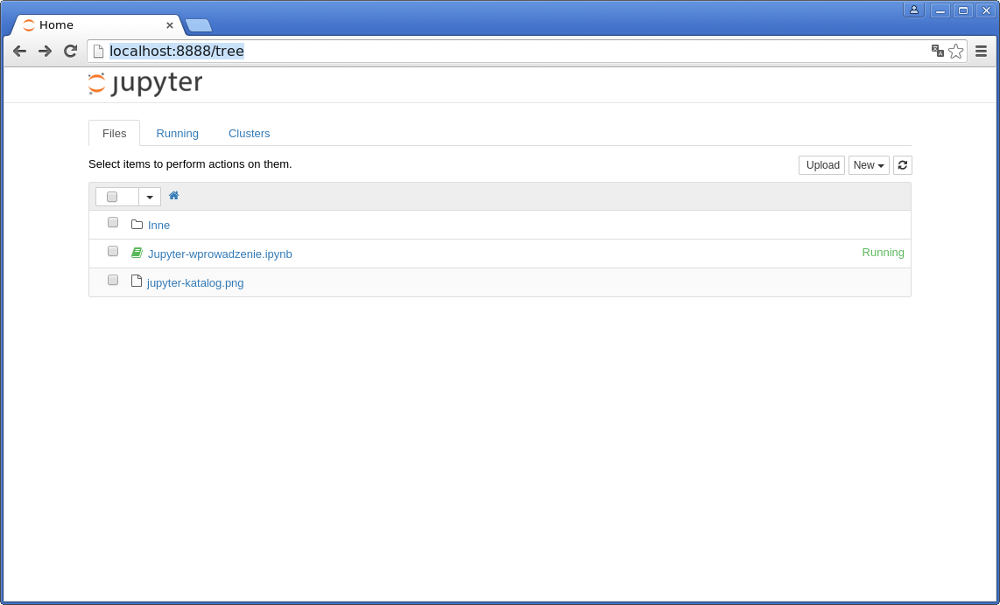
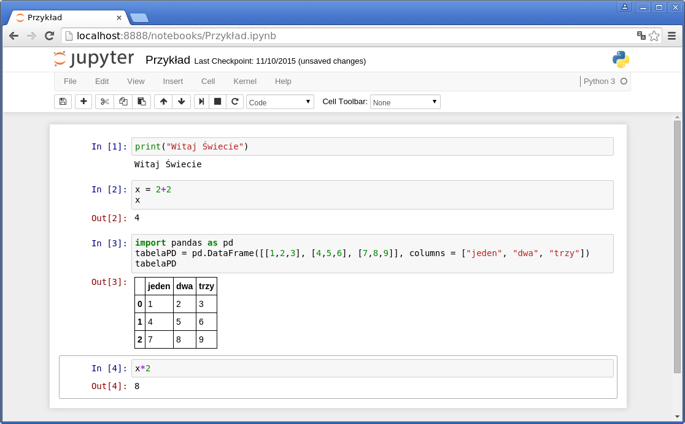
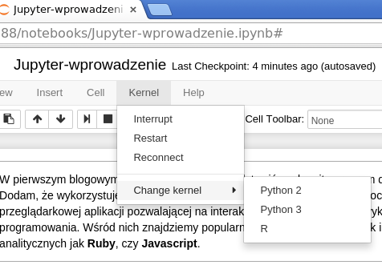

W pierwszym blogowym wpisie będę chciał przedstawić znakomity program do prowadzenia statystycznych anliz danych. Dodam, że wykorzystuję go równocześnie do napisania tego postu. Mowa oczywiście o tytułowym Jupyterze, czyli przeglądarkowej aplikacji pozwalającej na interaktywną analizę danych z wykorzystaniem wielu skryptowych języków programowania. Wśród nich znajdziemy popularne języki Python czy R, jak i te mniej popularne w zastosowaniach analitycznych jak Ruby, czy Javascript.
Jupyter Notebook¶
Jupter to w pierwszej kolejności przeglądarkowe środowisko do pisania skryptów. Pierwotnym projektem na bazie którego powstał Jupyter jest IPython, którego ostatnim wydaniem jako osobnego programu była wersja 3.0. Od wersji 4.0 IPython funkcjonuje już jako podstawowy kernel Jupytera, o czym przeczytamy dalej.
Samym Jupyterem możemy pobawić się na try.jupyter.org
 Strona główna Jupytera
W czym kodziłby Galileusz?¶
Ogólnie notatnik Jupytera możemy określić jako połączenie graficznego IDE z konsolą. Chociaż mi przypomina trochę Worda z możliwością pisania i wykonywania kodu.
Przyznać należy, że twórcy Jupytera byli również kreatywni co do samej nazwy. Z jednej strony jest to akronim od nazw trzech języków programowania wykorzystywanych do obliczeń naukowych: nieco mniej popularnej Julii, jak także znanych szerzej Pythona i eRa. Druga ciekawostka ukryta w nazwie to nawiązanie do notatnika Galileusza w którym Uczony zapisywał wyniki swoich obserwacji plam słonecznych, czy księżyców Jowisza. Do tych ostatnich badań nawiązuje również logo projektu.
 Przykładowy notatnik Jupytera
Sam Jupyter Notebook nawiązuje logiką zapisu do notatnika Galileusza, co możemy zobaczyć na przykład TU [505kB], TU [180kB], lub TU [42MB].
{kind=link}
{kind=link}
Działanie notatnika opiera się na komórkach, w których możemy pisać polecenia. Wykonanie polecenia przeważnie zwraca wynik lub komunikat pod komórką.
Przykład wykonania funkcji print w Python 3.5:
print("Witaj Świecie")
Jupyter wspiera również obiekty ramek danych takich jak na przykład DataFrame w pythonowej bibliotece Pandas. Jest to spore ułatwienie pozwalające na interaktywny wgląd w analizowane dane.
Przykład wywołania obiektu tabeli (DataFrame) w Python 2.7 z wykorzystaniem biblioteki Pandas:
import pandas as pd
tabela = pd.DataFrame([[1,2,3], [4,5,6], [7,8,9]], columns = ["jeden", "dwa", "trzy"])
tabela
Podobnie jak w przypadku tabel, poniżej kodu możemy również wykonać wykresy i wizualizacje danych wygenerowane z wykorzystaniem takich bibliotek jak matplotlib, bokeh czy ggplot.
Kernele do ponad 40 języków¶
W sumie nie znalazłem dobrego tłumaczenia dla słowa kernel. W przypadku Jupytera "kernele" to interpretery różnych języków, które można dograć do podstawowej wersji. Z drugiej strony takie środowiska zawierają również dodatkowe funkcje ułatwiające pracę w Jupyterze, stąd też trudno określić je jedynie jako interpreter.
Listę dostępnych kerneli znajdziemy pod tym adresem LINK

Możliwość wyboru kernela w jakim mają być wykonywane komórki Jupytera
Fakty z Jupytera¶
- Jupyter posiada swoją serwerową wersję Jupyter Hub umożliwiającą stworzenie środowiska do zespołowej pracy nad analizą.
- Istnieje kernel integrujący Jupytera ze Sparkiem
- Jupyterowy notatnik w formacie *.ipynb zapisywany jest jako JSON. Dzięki temu może być wykorzystany do wygenerowania wpisu na blogu :). W Pelicanie wystarczy doinstalować plugin pelican-ipynb, co sprawia, że Jupyter staje się również świetnym CMSem.
- Wbudowany w program NBConverter pozwala na przerobienie notatnika na prezentację w formacie HTML, z wykorzystaniem biblioteki reveal.js. Robi się to jedną komendą!
- Jupyterowy notatnik może być wyeksportowany do formatu HTML, lub PDF z wykorzystaniem LaTeXa.
- Domyślny kernel Jupytera (IPython) rozszerza dodatkowo możliwości biblioteki rpy2 pozwalającej na łączenie kodu Pythona i R. O czym będzie kolejny wpis.
- Jupyter zbudowany jest w oparciu o pythonowy framework Tornado
- Jest podpowiadanie składni
- Niestety małą bolączką jest jeszcze wersjonowanie notatników. Przeważnie zalecane jest korzystanie z bookstore. Alteratywne rozwiązanie to przeformatowanie JSONa na Markdowna z pomocą wtyczki ipymd i wykorzystanie gita. Pod flagą IPythona program trochę lepiej sobie z tym radził. Może ktoś zna jakiś lepszy sposób?
- Krytyka Jupytera: r-bloggers.com